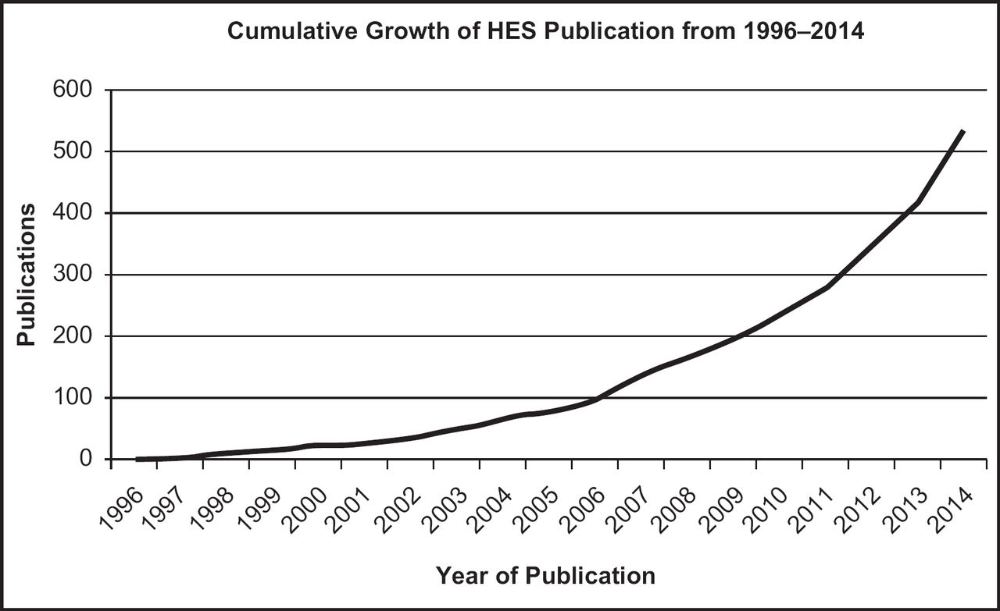

Introduction
In the late 1980’s, after a series of reports produced by the Steering Group on Health and Services Information advocating the need for a centralised data base of hospital information to the Secretary of State, the roll-out of a standardised administrative data for the National Health Service (NHS) began.
Up until 1989 when the English HES database was established, hospital episode statistics were based on a sample of 10% of admitted records and whilst this may have provided some value for research, it was believed a more complete data set would improve the quality and efficiency of the NHS.
Initially, the database was only for inpatient care however this later expanded to include:
Inpatient episodes (including maternity)
Outpatient episodes
A&E attendance
Critical Care
Note: Not all mental health activity is included in HES as there is a separate Mental Health Services Data Set (MHSDS)
Data publication
At its core, the HES data set is to facilitate hospital reimbursement from the NHS for the care they provide. It is important to note that a secondary use (and not primary) is for HES to be used for research. Whilst there are steps to clean and have some data quality, there are concerns by the research community regarding the quality, completeness and coverage of HES records.
Results from a bibliometric analysis of 520 studies extracted from PubMed showed the growth of HES data usage in publications from 1996 to 2014 with 1 publication found in 1996 and 99 found in 2014.@ref(Chaudhry329) It is likely for this trend to continue as HES offers a vast amount of information about the population and is being linked to other national datasets such as ONS mortality resulting in increased applicability e.g. survival analysis. However, HES isn’t without issues as it will be discussed later.

Annual HES data set
As mentioned, the primary purpose of HES is for hospital reimbursement. As such, each annual dataset is defined by the financial year (From 1 April to 31 March) and not by the calendar year.
The different data sets of HES
[diagram of different data sets, subsets, etc]
Admitted Patient Care (APC) - Details of episodes of care where a patient has been admitted into hospital (including regular day or night attending patients)
Critical Care (CC) - A subset of APC data and consists of Adult Critical Care from 2008-09 onwards, with neonatal and paediatric CC included from 2017-18.
- Each adult CC record represents a critical care period (from admission to discharge at a particular location)
Outpatients (OP) - Collection of individual records of outpatient appointment in England. It includes information on:
Type of outpatient consultation
Appointment dates
Main specialty treatment specialty under which the patient was treated
Referral source
Waiting times
Accident & Emergency (AE) - attendances recorded at major A&E departments, single specialty A&E departments, walk-in centres and minor injury units in England.
- the Emergency Care dataset ECDS has now replaced AE as the official source of emergency care data, as of April 2020.
The HES-ONS linked mortality dataset is created by linking mortality data from the Office for National Statistics (ONS) to patient information in HES. The HES database captures information on deaths only if they occurred in hospital.
The case for HES in research
Considerations and issues of HES
Definition of an Episode and Spell
Spell - Period of continuous care in one provider institution
Episode - Periods of continuous care from a single consultant (as in one, we’re not too concerned with the martial status of the good-looking physician who treated you).
[Insert diagram of episodes within a spell]
Each row in HES admitted patient care (APC) is a single episode which can be grouped into spells. A spell begins when a patient is admitted and ends when a patient has been discharges, transferred or dies.
[example image of data frame]
Things become increasingly complete when a patient is transferred to another NHS provider institution as a new spell is created with a new episode within it. For example,
[insert image with CIP]
However, a Continuous Inpatient Spell (CIP) is defined to encompass multiple spells.
Diagnostic and procedure coding is entered by clinical coders written by the clinicians, when junior doctors are being trained they are reminded of the importance to get it correct on discharge summaries and to be clear on diagnosis of patients as there rules on what can/can’t be coded. I.e., probable diabetes cannot be coded, only definitive diagnoses can be.
Examples of FCE’s & Spells
Data Cleaning & Derived Variables
ID change - August 2021 Update
Data cleaning and Derivations can be found here. From 2021, the patient identified in HES (HESID) changed to Master Person Service (MPS).
Coding with HES
Summary
All FCE’s in a spell will have the same admission date (
admidate).epistartandepienddenote the start and end dates of an episode.epiendwill be missing for unfinished episodes.epiorderdenotes the order of episode within a spelladmimethdenotes the admission method and is useful for determining which admissions are planned vs unplanned e.g. Elective (booked/waiting list), emergency, transferred from another hospital, delivery/new baby.
According to the HES data analysis guide, it is recommended to remove unfinished episodes. The reason for this is, if you do not, you will have duplicates as unfinished episodes will also show in the next financial year as finished episodes. epistat is used to define an episode’s status, a finished episode is coded using the epistat = 3 meanwhile unfinished episodes are epistat = 1 .
Variables relating to discharge such as date (disdate), method (dismeth), destination (disdest), etc will only be recorded for the last episode of a spell. Therefore, if you wish to make this complete within a spell, you will need to perform some R trickery.
CIPS/Superspells
As briefly mentioned, a CIPS (also known as a superspell) is used to define one continuous period of care within NHS hospitals. An additional complexity when using this is the need to define transfers between hospitals. This can be done by looking at the admission date and discharge dates (allowing for possibly 1 day gap as they may be discharged/admitted around midnight on a given day which looks like a gap but isn’t). Columns such as admission method admimeth, admission source admisorc and discharge destination disdest can be used to work out transfers.
Why is that important? It is more important if you’re analysing your data at a hospital level as you will need to determine which hospital to attribute your outcomes to. A patient could have had a procedure at one hospital but recovering in another, for example.
Documentation into the methodology can be found here
HES analysis steps
HES analysis guide can be found here.
Summary of steps:
- Initial data checks
- Are all the requested variables in the data?
- How much of the data is missing
- Data cleaning
- Check date columns
- Remove duplicates and unfinished episodes
- Link admissions into spells/CIPS
- If you’re using linked data do a sense check e.g. Do rates over time make sense
- Derive analysis variables
- Analyse results
- Look at sensitivity analysis and tests robustness. I.e. results are not driven by odd artifacts resulting from the use of HES
- Validate
- Ideally comparing to published data or experts (e.g. clinicians)
Small Numbers
A small number in HES is defined as 1 - 5 which may allow for the identification of individual patients or a hospital consultant. When publishing or releasing HES data, cell values from 1-5 should be omitted to prevent possible identification. A note can be added at the bottom such as:
The small numbers guidance also extends to restrictions on certain ICD/OPCS codings which are sensitive (e.g. Abortions, HIV, IVF, STI’s). Advice should be sought from HSCIC if there are any doubts.